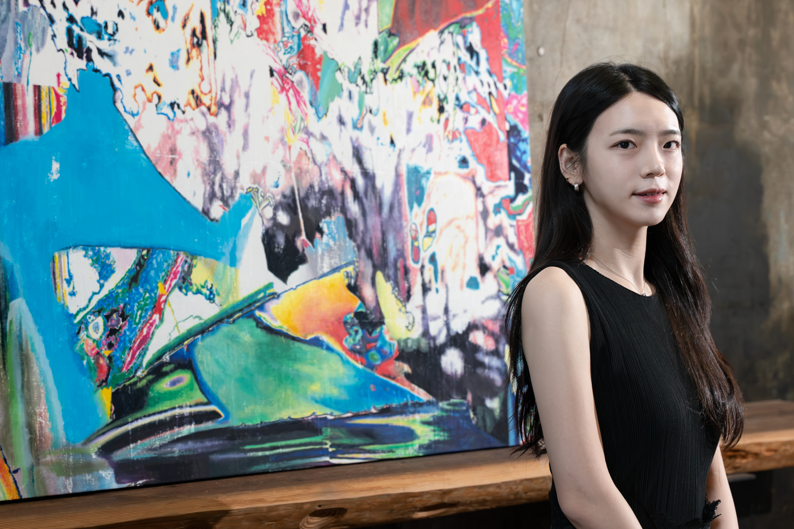

03 / ARTIST INFORMATION
About.
ARTIST STATEMENTDOYEUN KIM

김도연은 휴대폰에 저장한 일상의 이미지들을 다시 살펴보며, 그 안에서 색과 빛, 윤곽, 명암의 관계를 선택해 새로운 화면으로 구성한다. 확대와 자르기, 중첩 등 디지털 편집의 과정을 거친 이미지는 전사와 아크릴 회화의 과정을 통해 다른 물질적 표면에 놓인다.
화면에서 편집한 형상은 전사의 압력과 물의 양, 종이층이 제거되는 과정에 따라 일부가 밀리거나 지워지기도 한다. 이러한 흔적들은 회화가 이어지는 자리에서 새로운 관계를 만들어낸다.
Artist statement draft — replace with approved final text before publication.
Education
2026–MFA studies, Painting, Hongik University, Seoul
2026BFA, Painting, Hongik University, Seoul
Selected Solo Exhibitions
2026OVERLAPPING WAYS: 겹침새, Daelimchanggo Gallery, Seoul
2026SPECTRA, Gallery Mei, Busan
Awards
2024Park Seo-Bo Foundation Scholarship